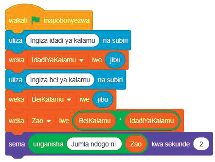

Kazi ya kufanya namba 3
Rejea mfano wa kutumia programu katika maduka makubwa, unda programu sahili itakayotafuta jumla ndogo ya kununua kalamu. Utahitaji kutengeneza kibadilika, kupokea maelekezo kutoka kwa mtumiaji, kufanya hesabu ya kuzidisha, na kuonesha jibu. Fuata hatua zifuatazo.
Hatua
1. Unda vibadilika vitatu, cha kwanza kihifadhi idadi ya kalamu (kiite IdadiYaKalamu), cha pili kihifadhi bei ya kalamu (kiite BeiYakalamu) na cha tatu kihifadhi jumla ndogo (kiite JumlaNdogo).
2. Bofya bloku la Hisi kisha chagua bloku ya uliza ( ) na subiri kwa ajili ya kupokea maelezo kutoka kwa mtumiaji.
3. Bofya bloku la Vibadilika kisha chagua weka kibadilika iwe (jibu) ili kuhifadhi thamani za IdadiYaKalamu na BeiYakalamu.
4. Weka bloku la zidisha ndani ya bloku ya weka kibadilika iwe (jibu) ili kutafuta jumla ndogo kwa kuzidisha IdadiYaKalamu na BeiYakalamu kisha hifadhi jibu kwenye kibadilika cha JumlaNdogo.
5. Bofya bloku la Muonekano kisha changua bloku ya sema ( ) kuonesha jumlandogo kwa mtumiaji. Angalia au sikiliza maelezo ya Kielelezo namba 4.
Bloku za msimbo
